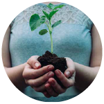
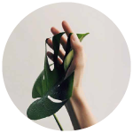
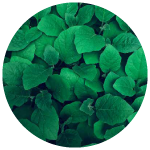
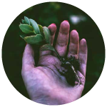
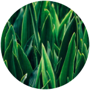
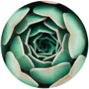
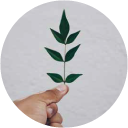

RSK, the first smart contract platform secured by the Bitcoin network, is transforming the way businesses are conceived, designed, and built. Its complementary platform, RSK Infrastructure Framework Open Standard (RIF OS), takes these technologies to scale, simplifying the use of decentralized infrastructure for any traditional or Blockchain developer, organization, or innovator.
With help from IOVlabs platforms, people everywhere will have the power to create digital identities, build reputations, establish and enforce agreements, and engage in commercial transactions without intermediaries.
Now everyone has the chance to participate in a new economy for our new Internet age. That’s why we call it the Internet of Value.







IOV means Internet of Value, the story behing the concept
is to
say that we are
all forming part of a chain that shares and retransmits information with more freedom of
participation and inclusion.
We promote an horizontal and collaborative way of interacting in which everyone takes part into the
process.
All the Interactions are different between people, and
all people
are different
as well (from different nationalities, cultures & backgrounds). To make these interactions and
connections work we depend on each others and we are all equal inside the blockchain.
The Seed is a symbol of source of beginning, and evoque the start of something bigger and the core
of whats to come. We create the networks by constructing, assembling and joining parts of a reds of
connections.
A rootstock is a type of plant that grows into other plants, from the root. A new plant is born from the very same root. All the plants that are part of the same rootstock are interconnected; they are linked, despite appearing to be independent when looking at them from the surface. One particular characteristic of rootstock plants is they can become interconnected with other plants, and they incorporate these other plants into their very same community.
On top of this, an important aspect is they are also very resistant. If you cut a rootstock in half what really happens is you have two rootstocks that, in the future, can reconnect. A rootstock is the root of life; it is what you see. The flowering of the root, projects, things being born of it, are all manifestations of that root that connects and nourishes everything.
Taringa! means “ear” in Maori. Taringa! was created with the purpose of giving everybody a voice, without distinctions and with total freedom. We managed to deliver the early promises of the Internet Revolution by empowering individuals through a community in which to share, express opinions and debate amongst peers while respecting at the same time their privacy.
Taringa! is the world ear in which everybody´s voice is, and it is becoming a model of the social media platforms of the future censorship resistant in which individuals will be fully in control of their information and value.